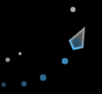

Prism
Thanks so much for playing my game! If you would like to support me
further please purchase this awesome add-on!
Prism is a new glass-like base skin that both players can use, it changes
colour based on what trail you choose with it.
Your contribution will help go towards improving the game, such as online
leaderboards and maybe even online multiplayer!
BUY NOW
Please Wait